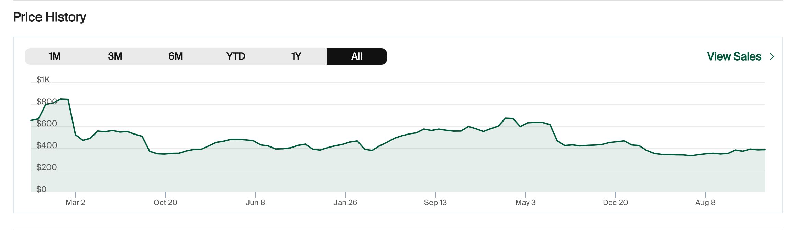

Limited edition sneakers can fetch many times their retail price on the secondary market. The price a particular "colorway" goes for is dependent on a variety of factors, from simple things like its brand and total stock number, to more nuanced details like the design and collaborators with their name attached to it.
The price of different shoes can flucuate wildly over time, so for sneakerheads that want to add a specific pair to their collection, knowing the right time to buy can mean a diffence in price of 10s and even 100s of dollars. The image below shows the sale price of a shoe across the past 5 years, with the high price being over $800 and the low being around $300.
The project would entail training a NN on a dataset comprising a wide variety of different sneakers. Data points would include simple things like brand, model, retail price, and primary/secondary colors, along with more nuanced details, like material, and price history. A lot of this data is available on resale platforms like StockX. A big challenge, however, is to scrape this data, as the StockX site has quite a bit of bot protection. While a more limited data set could be collected manually, collecting price data would be too time-consuming to be done by hand.
The NN can then be deployed as an application to predict future prices of both newly released sneakers and existing ones. The application would output some prediction of general price trends, as well as some time frame for when the best time to buy would be. Users would be able to set some maximum time frame (e.g. when are they going to be the cheapest in the next 3 months?) as opposed to having answers that could be years in the future.
This type of application could also be applied to other collectibles, though a separate set of variables would be required.